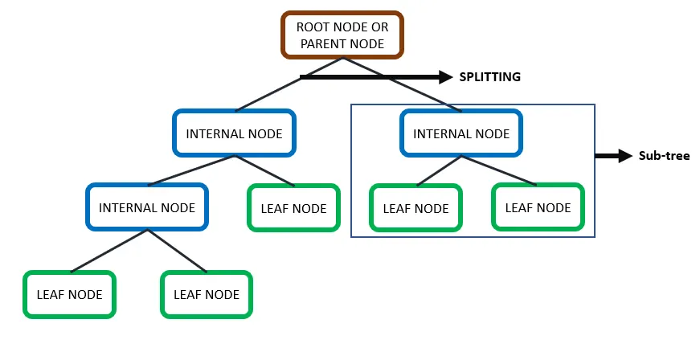
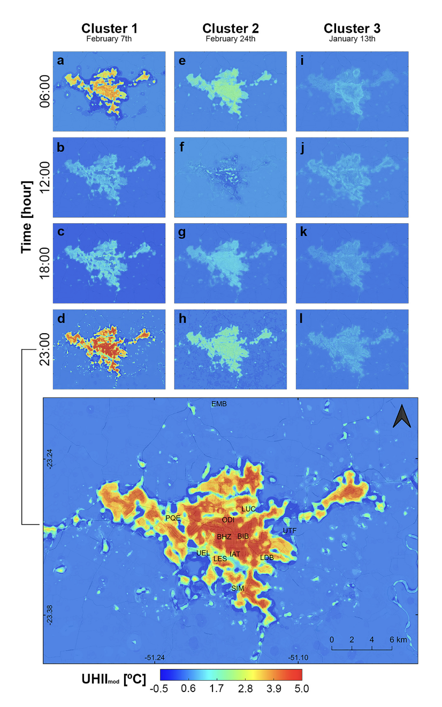

6 Classification I
6.1 Summary
This week we learned about machine learning methods in Google Earth Engine (GEE), including CART and Random Forest, which are highly useful for remote sensing prediction and classification.
6.1.1 CART
CART predicts by repeatedly splitting data into smaller, more homogeneous subsets called nodes.

CART structure.Source: Medium
It handles classification by creating the purest possible groups (using Gini Impurity) and regression by finding the lowest Sum of Squared Residuals (SSR). A major challenge is overfitting, where the tree memorizes training data perfectly but performs poorly on new data. This can be prevented by pruning complex branches or setting minimum observation thresholds for splitting.

Overfitting. Source: Mathworks
Here is an example of CART classification on land use in Tianjin, China (my hometown) using Sentinel-2 data.

CART classification in Tianjin on Sentinel 2 Imagery
6.1.2 Random Forest
Random Forest is a machine learning algorithm made up of many individual decision trees. A single decision tree can sometimes struggle to make good predictions on new, unseen data. To fix this, a Random Forest builds multiple trees using random subsets of training data, a process known as bootstrapping. Once all the different trees are built, they each make their own prediction, and the final output is decided by a simple majority vote. By combining the results of many trees, the final model becomes much more accurate and reliable than relying on just one.
Here are the results of a Random Forest Classifier on the same imagery of Tianjin.

Random forest classification in Tianjin
6.1.3 Benefits, Limitations, and Future Developments
| Benefits | Limitation | Future Developments | |
|---|---|---|---|
| CART | It is easy to understand and can flexibly handle both categorical (classification) and continuous (regression) data. | It easily overfits the training data, often producing a noisy, salt-and-pepper effect on the map. | It could be integrated with object-based image analysis (OBIA) to group pixels first, reducing those scattered, isolated pixel errors. |
| Random Forest | It creates a much cleaner, more generalized map because averaging many trees smooths out individual errors and handles noise well. | It requires significantly more computational power and time to run since it builds and processes many trees instead of one. | Future trends may focus on optimizing the algorithm’s computational efficiency for faster processing on massive, planetary-scale cloud datasets. |
6.2 Application
In addition to LULC classifications, CART and Random Forest are also widely applied to many prediction and analysis tasks in the field of urban studies.
For example, Oukawa, Krecl, and Targino (2022) used a Random Forest model to study the Urban Heat Island (UHI) effect in Londrina, Brazil. They trained the model to predict daytime and nighttime air temperatures using various predictors, including weather data, land cover, and urban geometry. I think this approach is very useful for urban planning, as it highlights specific hotspots that need more green spaces. However, because the study only used summer data, the model might not work as well in other seasons. This raises questions about the model’s generalizability. Also, an \(R^{2}\) score over 0.96 is extremely high, which might suggest the model is slightly overfitted.

Predicting UHI temperatures in Londrina, Brazil using a random forest model. Source: Oukawa, Krecl, and Targino (2022)
Furthermore, researchers have widely applied Random Forest models to study urban traffic. Liu and Wu (2017) built a Random Forest model which relied on general categorical variables such as weather, road conditions, and holidays to forecast congestion levels. It performed quite well, reaching an 87.5% accuracy rate. While I find this categorical approach surprisingly effective and easy to implement, it feels somewhat limited. Relying solely on broad static features might not be enough for real-world traffic management. Live GPS or vehicle count data might be integrated into future models to better capture complex urban patterns.
6.3 Reflection
Reflecting on this week, it is really exciting to see theoretical machine learning models like CART and Random Forest put into practice. Seeing these algorithms actually map out my hometown of Tianjin makes the theory feel much more tangible. While mapping land cover is cool, I am most fascinated by how these tools can be pushed further to tackle complex urban issues like heat islands and traffic congestion.
However, reading the literature also taught me to be cautious. A model is only as good as its training inputs. If we rely on limited seasonal data or static variables, the models will struggle to generalize and might easily overfit. In the future, I think the real potential in urban studies lies in combining remote sensing imagery with dynamic, real-time datasets like live vehicle GPS or mobile phone data. This could shift our focus from just observing a city’s physical layout to truly understanding its daily pulse, helping urban planners make smarter, more responsive decisions.